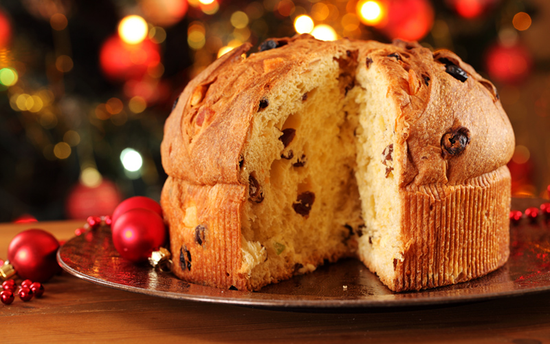

Panettone

Descriptions
Panettone is an Italian type of sweet bread originally from Milan, usually prepared and enjoyed for Christmas and New Year in Western, Southern, and Southeastern Europe as well as in South America, Eritrea, Australia, the United States and Canada.
Ingredients
- 1 (.25 ounce) package active dry yeast
- 1 cup warm water (110 degrees F/45 degrees C)
- ¼ cup white sugar
- 2 eggs
- ½ cup nonfat plain yogurt
- 1 teaspoon vanilla extract
- 1 tablespoon grated lemon zest
- ¼ teaspoon salt
- 4 cups unbleached all-purpose flour
- ¼ cup dried currants
- ¼ cup raisins
- 1 tablespoon confectioners' sugar
- 1 tablespoon butter, melted (Optional)
Steps
- In a medium bowl, combine yeast, water and sugar. Cover and let stand 10 minutes, or until foamy. Add eggs, yogurt, vanilla, lemon zest, and salt. Mix well. Stir in flour 1/2 cup at a time until dough forms into a manageable ball. Turn out onto a lightly floured surface and knead for 5 to 10 minutes, adding flour as necessary, until dough is soft and pliable, but not sticky. (May need up to 5 cups flour.) Place dough in a large, lightly pan-sprayed bowl, cover, and let rise in a warm place until doubled, about 1 hour.
- Preheat oven to 350 degrees F (175 degrees C) and spray a round 8-inch cake pan with non-stick spray. In a small bowl, toss dried fruit with confectioners' sugar. Punch down dough in bowl, transfer to floured surface, and knead in the fruit.
- Form dough into a ball, place in prepared cake pan, cover loosely with dish towel, and let rise 30 minutes. (Loaf will rise above the pan sides.) Brush with melted butter, if desired. Bake for 45 minutes, or until loaf is golden brown and a toothpick inserted in the center comes out clean. Makes 10 wedges.